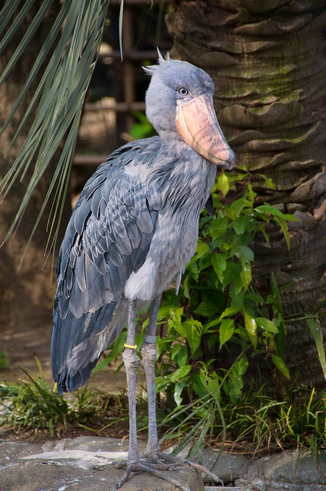
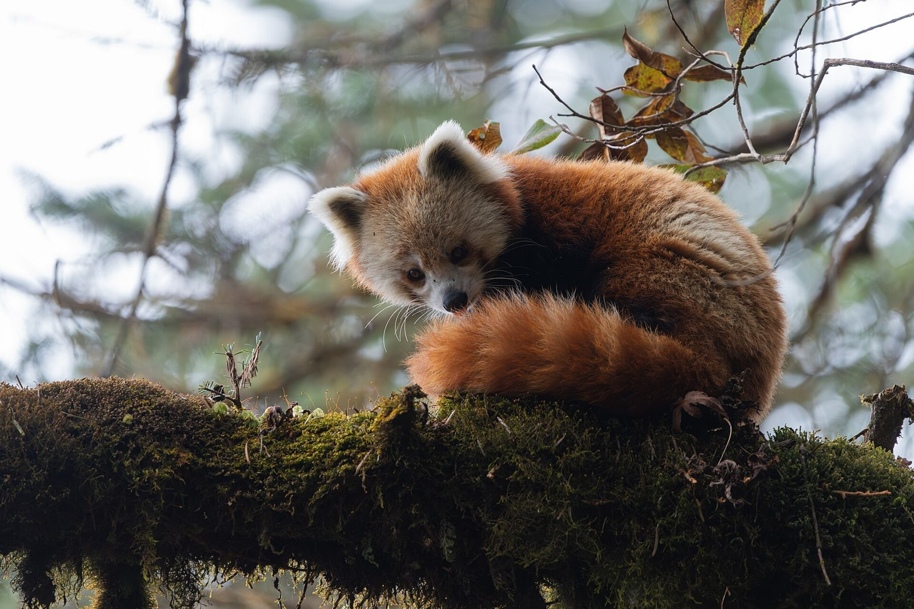
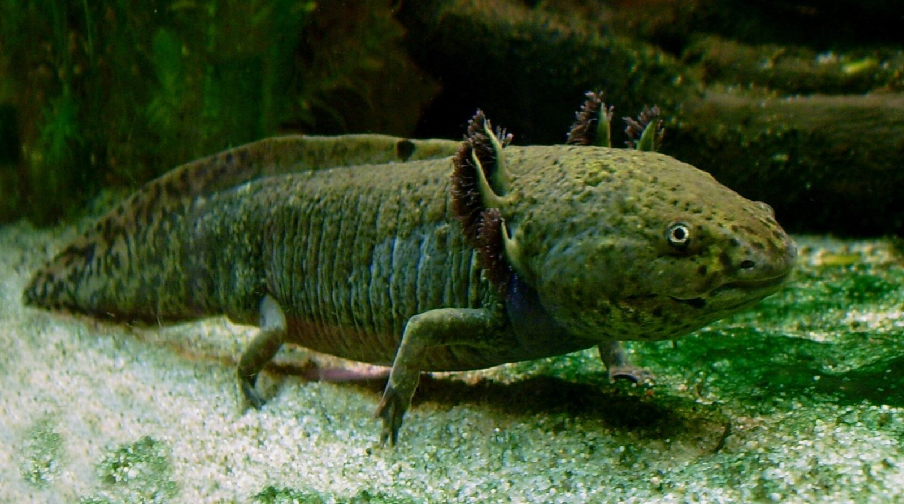
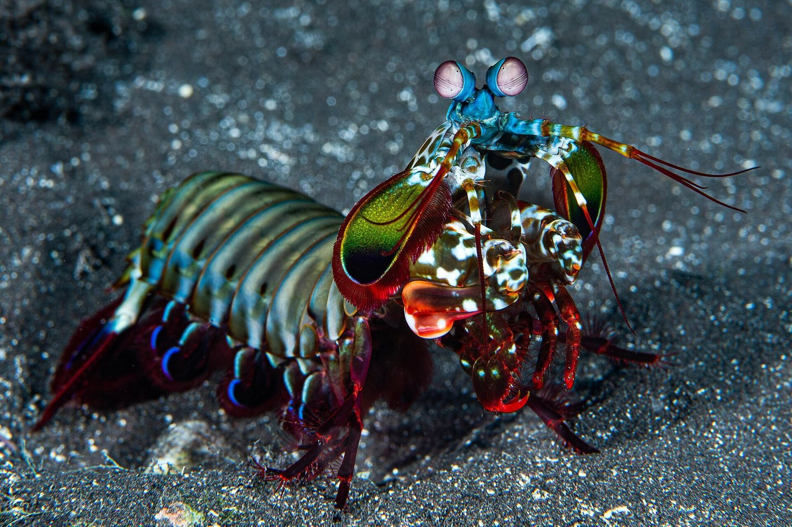
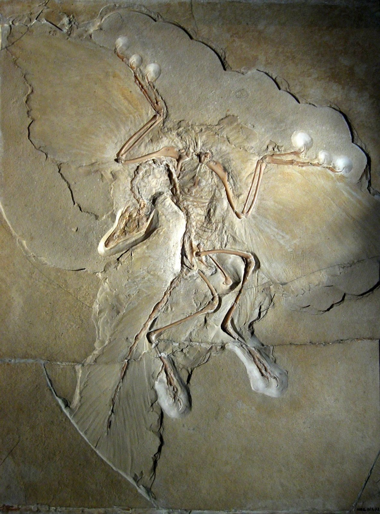
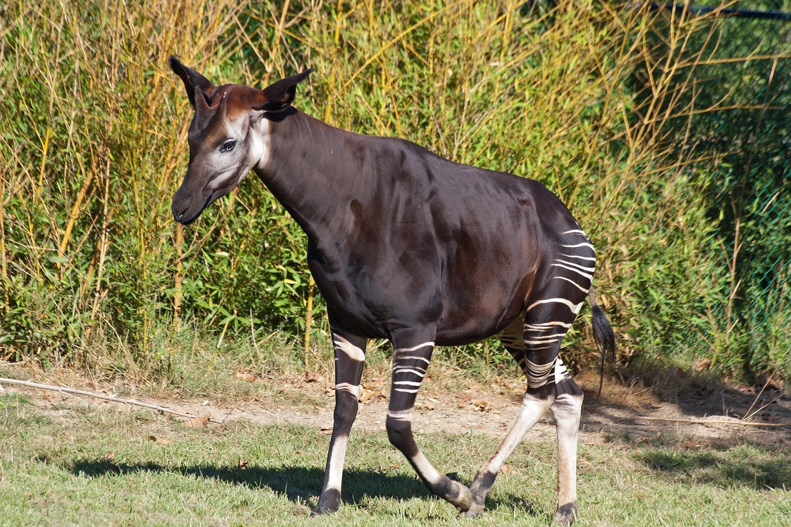
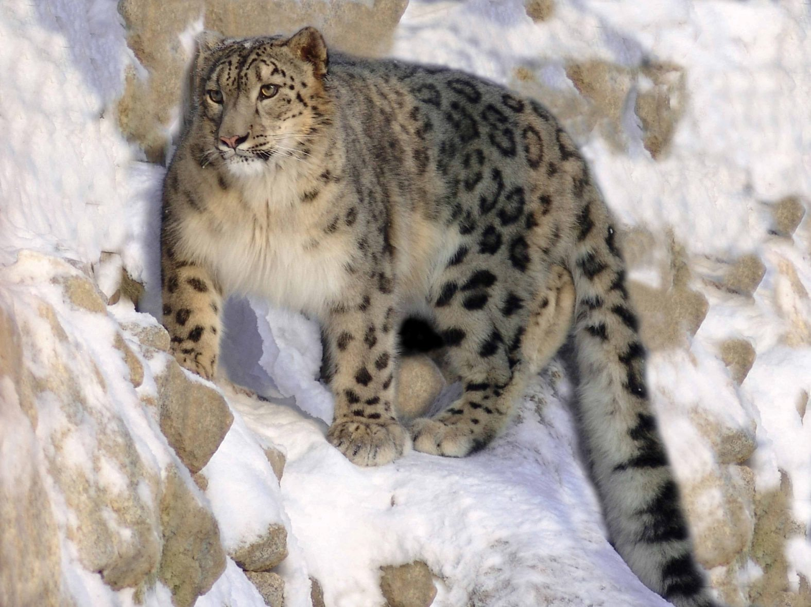
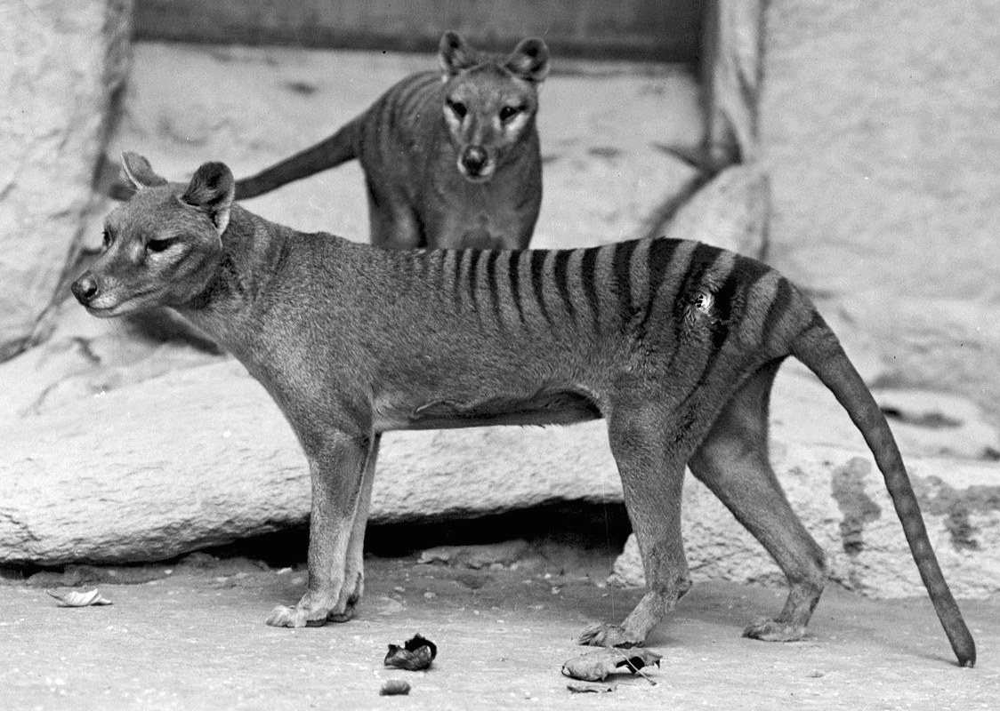
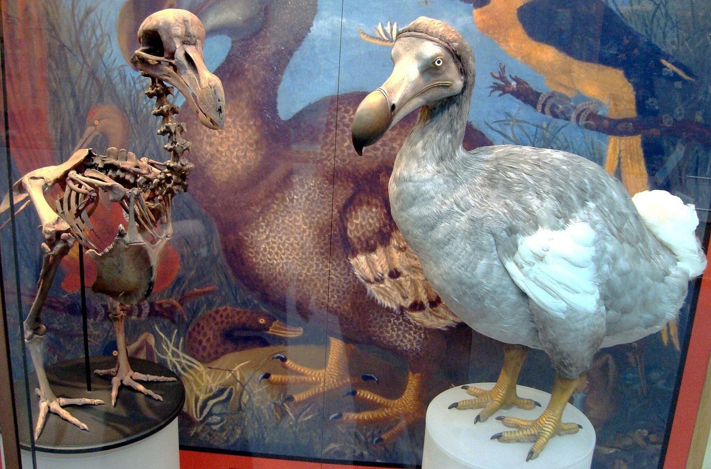

Rule for every screen: the species gets the frame, the information waits at the edges. Photos run edge to edge; text lives in a bottom zoo-board panel or on a dark scrim below the animal, never across its face. All photos are real Wikimedia Commons images, credited on screen. See CREDITS.md.

Welcome
Meet a new species every swipe.
Real photos, real facts, from every branch of the tree of life. This is a shoebill.
Step 1 of 2
Where should we start?
Pick a few branches. You can change this any time, and we’ll still surprise you now and then.

✓MammalsMammalia
AmphibiansAmphibia
✓CrustaceansMalacostraca
Fossil lifeExtinct species
Surprise meAnything goes
Snow leopard
Panthera uncia
Mammalia › Carnivora › Felidae
Did you know?
It can’t roar. It chuffs, hisses and yowls instead.
Vulnerable IUCN Red List
Did you know? · Eyesight
12 vs your 3
Its eyes carry at least 12 kinds of colour receptor. Human eyes have three.
Odontodactylus scyllarus · Source: Wikipedia
Wide photo, shown whole
Wide photos are never cropped into a sliver. They sit full-width on a blurred copy of themselves.

Thylacine
Thylacinus cynocephalus
Mammalia › Dasyuromorphia › Thylacinidae
Did you know?
The last known thylacine died in a zoo in Hobart, Tasmania, in 1936.
Extinct IUCN Red List
Archaeopteryx lithographica · 2 of 5
The Berlin specimen: feathers pressed into limestone about 150 million years ago, in what is now Germany.

Dodo · Raphus cucullatus · 3 of 6
A real dodo skeleton on display at Oxford’s natural history museum.
The painted bird behind it is a reconstruction.
Red panda
Ailurus fulgens
Animalia › Chordata › Mammalia › Carnivora › Ailuridae
Did you know?
Despite the name, it isn’t a close relative of the giant panda.
Sources. Text: Wikipedia, CC BY-SA 4.0. Photo: Sunuwargr, Wikimedia Commons. Tap any credit to open the original.
Animalia › Chordata › Mammalia
Orders
Your collection
Species met · 9
Every species you scroll past is added here. Long-press in the feed to save one.